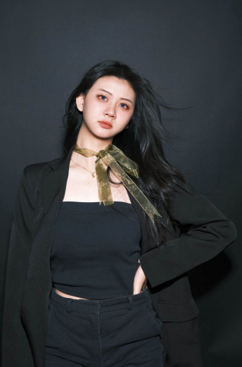
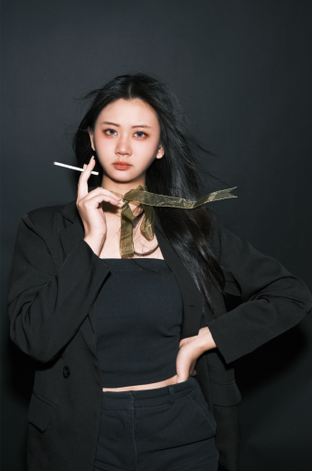
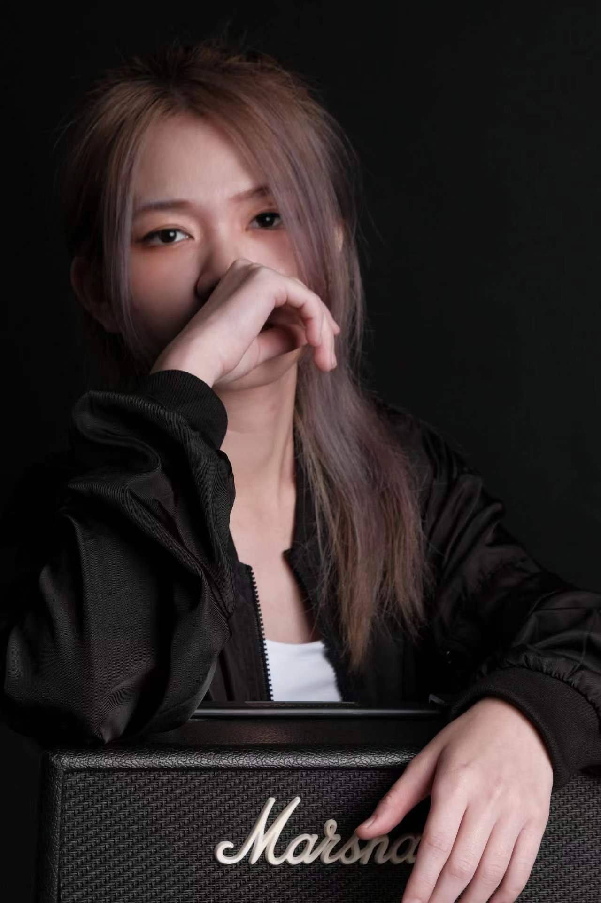

"Welcome to chronos, where we capture the essence of your personality through beautiful portrait photography."


"Welcome to my creative world! I'm Shana, a multimedia design diploma student at TARUMT.
With four years of experience as a makeup artist and one year in photography, I've had the privilege of
working as a model, makeup artist, and photographer. This diverse background has given me a deep understanding of
the intricacies of photography, enhancing my ability to communicate effectively with models.
“Recognize various aesthetics and create outstanding pieces”
I take joy in uncovering each woman's unique beauty, guiding them, and fearlessly experimenting with different
looks while staying updated with the latest trends.
"Discover Your Unique Aesthetic"
I believe in celebrating individuality, making the process both fascinating and meaningful. Through our
collaboration, you'll explore new possibilities and embrace your authentic self."

"Welcome to my creative world too! I'm JieHui, a multimedia design diploma student at TARUMT.
I have one year of experience in photography. I like to capture the beautiful moments in life with my lens. My
photography style focuses on detail and the use of light and shadow, and is dedicated to telling stories and
conveying emotion through the lens. The types of photography I am good at are portraits, landscapes, ecology, etc.),
and I am willing to try new shooting methods and ideas.
“Photography is an art”
Photography is considered an art form because it goes beyond simply recording reality, and more importantly,
expresses emotions, thoughts, and beauty through the photographer's perspective and skills. Photography can create
shocking, touching or thought-provoking works through composition, light, shadow, color and other elements. It is
this artistry that allows photography to occupy an important position in the field of visual arts.